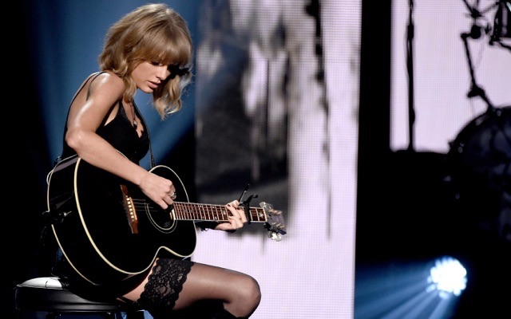
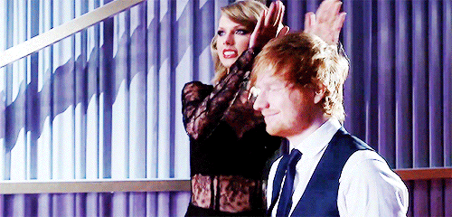

Concert
Taylor Swift Talks Friends, Sheep, And What To Expect From
Her World Tour! Watch The Interview HERE!
Taylor Swift has been pretty busy rehearsing for her world tour, but she still has enough time
to tease us with what we can expect!In a recent interview, the Style singer gave some insight
as to the changes she's making in her upcoming 1989 world tour, explaining that she wanted to
flip every decision she's made in previous tours and do the opposite!
[ Related: Taylor Swift Gives A 12-Year-Old Girl Battling Cancer The Gift Of A Lifetime! ]
That means different screens, lights, and costume changes! Swifty then dished that the fashion
in this show will be less costume-y and more "chic."
LPGA golfer gets concert tickets from Taylor Swift in Japan

Taylor Swift is performing in Japan this week. (Getty Images)Jessica Korda is in Japan this week.
Taylor Swift is in Japan this week. Things happened.Korda flipped out after Swift offered her
concert tickets over Twitter on Monday. Swift's 1989 tour is starting this week in Tokyo.
Korda is, clearly, a fan.
Wonder How Taylor Swift & Ed Sheeran HIGHlariously
Communicate Via Text?! Look No Further!

And they're the two best friends that anyone could ever have!
Everyone in the world knows that Taylor Swift and Ed Sheeran are like, the greatest musical BFF
coupling in history!
So any interaction we get to see happen between the two of them is just like winning the lottery!
[ Watch: Taylor Vs. Ed: Who Knows Who Better?? ]
It's been a hot minute since Tay posted anything about her British bestie — and in a swift
moment on Monday morning, everything changed.